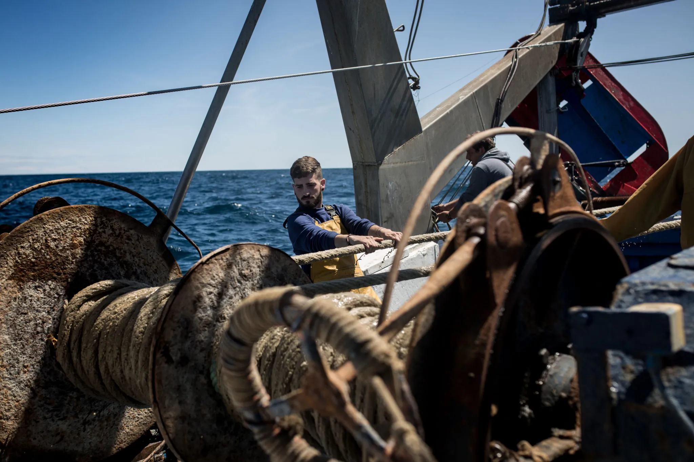
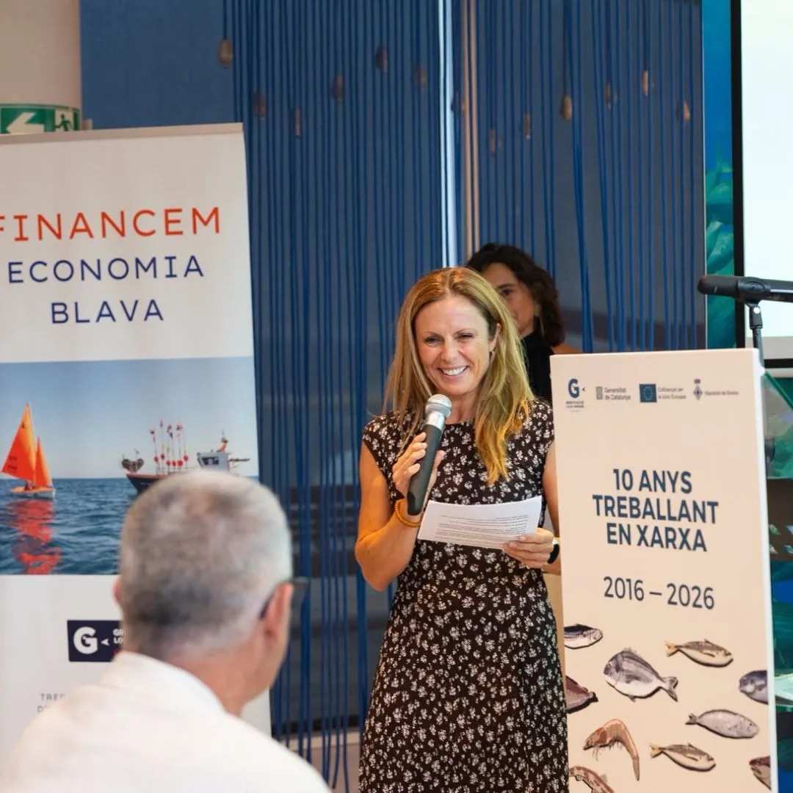
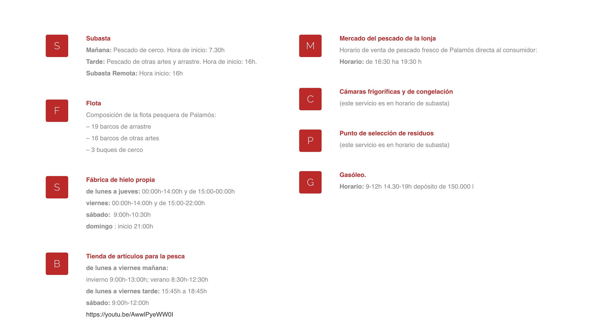
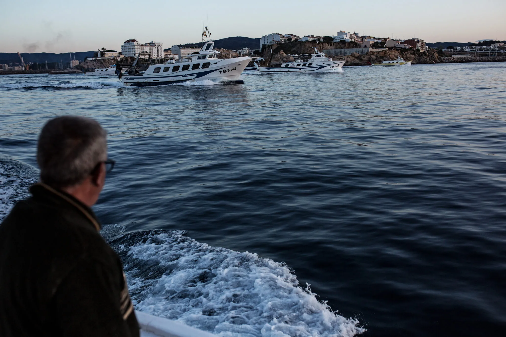
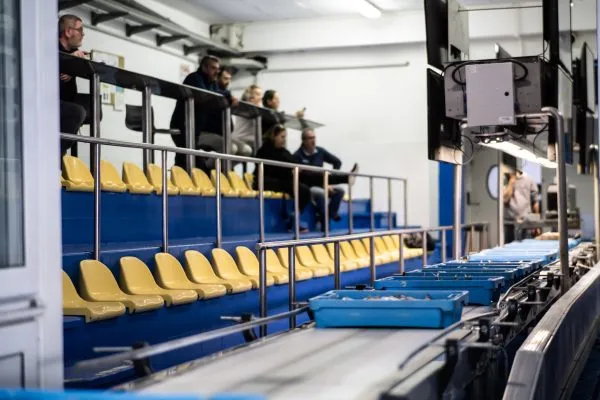
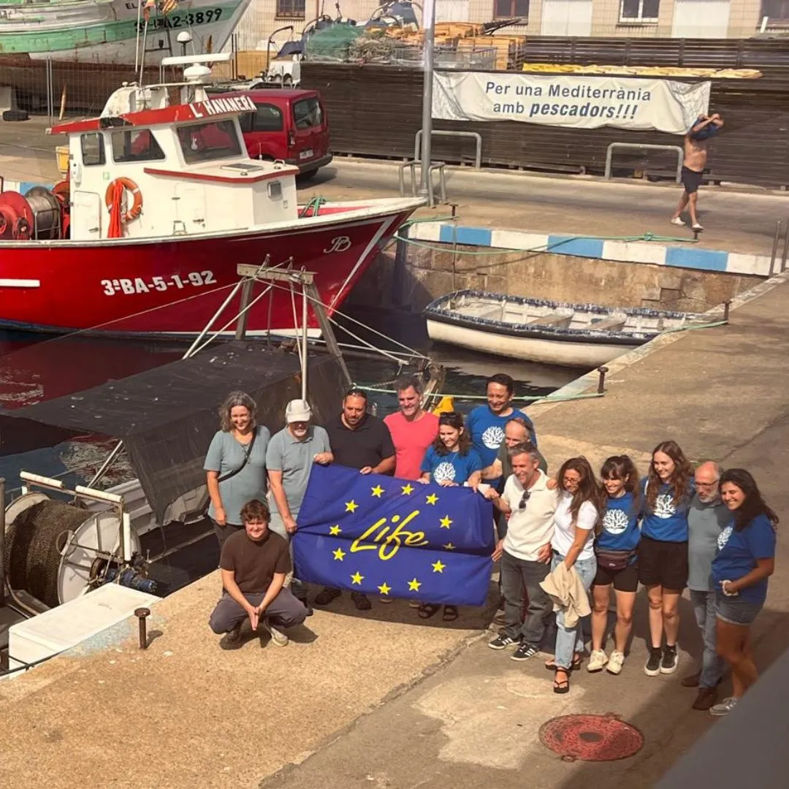
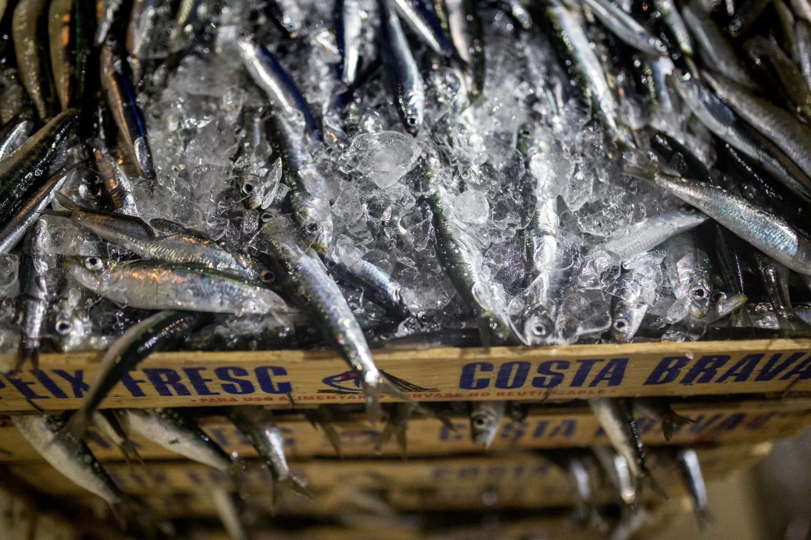

08 · Pesca y territorio
Cofraria de Pescadors de Palamós / OPP-91
La Cofradía y la OPP-91 articulan flota, lonja, comercialización, cogestión y representación del sector pesquero de Palamós. El objetivo es conocer a quienes viven del mar y seguir el recorrido de la captura.







Contacto principal
Cristina Mañas es gerente de la Cofradía y de la OPP-91. Ha participado en Women Together in Fisheries, en Túnez, una conexión directa con la línea sobre mujeres y oficios marítimos.
Historias posibles
- Una salida de pesca y la vida cotidiana a bordo.
- La llegada a puerto, la subasta y la venta al consumidor.
- Katia Sales y Miquel, presentados por la Cofradía como dos de los pescadores más jóvenes de Cataluña. Katia todavía no fue contactada.
- La Fira de la Gamba de Palamós, que se celebra cada año y conecta pesca, producto, territorio y turismo.
Ritmos de la lonja
La información pública de la Cofradía indica subasta de cerco por la mañana desde las 7:30 y subasta de otras artes y arrastre desde las 16:00. El mercado de venta directa funciona por la tarde. Estos horarios son una guía inicial y deben confirmarse antes de una visita.
Jornada OPP91
La jornada «Pesca Mediterrània: reptes i oportunitats de futur» de las capturas aportadas se celebró el 23 de octubre de 2025. Fue la primera edición y reunió a más de 70 profesionales. No hay una edición 2026 anunciada por ahora; queda como antecedente y como contacto a consultar.